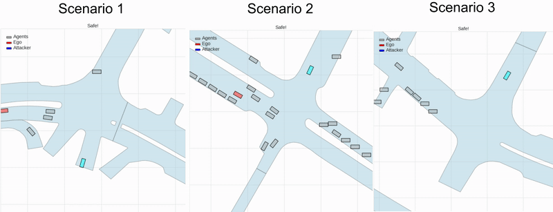
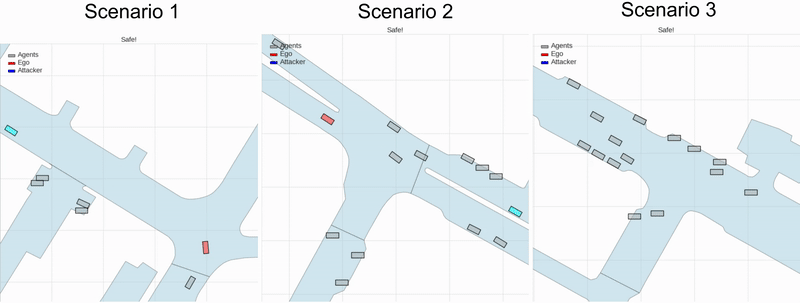
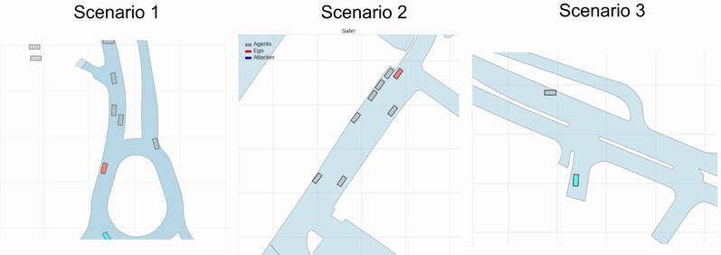
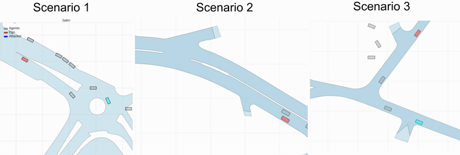
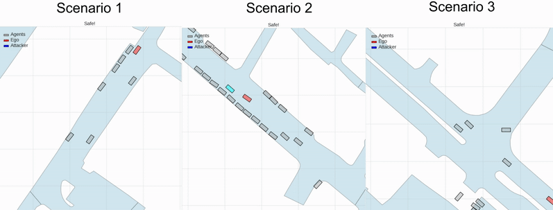

Video Overview
Abstract
Evaluating the safety of autonomous vehicles (AVs) requires diverse, safety-critical scenarios, with collisions being especially important yet rare and unsafe to collect in the real world. Therefore, the community has been focusing on generating safety-critical scenarios in simulation. However, controlling attributes such as collision type and time-to-accident (TTA) remains challenging. We introduce a new task called controllable collision scenario generation, where the goal is to produce trajectories that realize a user-specified collision type and TTA, to investigate the feasibility of automatically generating desired collision scenarios. To support this task, we present COLLIDE, a large-scale collision scenario dataset constructed by transforming real-world driving logs into diverse collisions, balanced across five representative collision types and different TTA intervals. We propose a framework that predicts Collision Pattern, a compact and interpretable representation that captures the spatial configuration of the ego and the adversarial vehicles at impact, before rolling out full adversarial trajectories. Experiments show that our approach outperforms strong baselines in both collision rate and controllability. Furthermore, generated scenarios consistently induce higher planner failure rates, revealing limitations of existing planners. We demonstrate that these scenarios fine-tune planners for robustness improvements, contributing to safer AV deployment in different collision scenarios.
Collision Types in COLLIDE
COLLIDE provides structured labels based on interpretable collision types with the largest number of task-specific collision cases. We consider 5 collision types based on NHTSA's survey. In all examples, the EGO (red) vehicle and ATTACKER (cyan) are colored accordingly.
Junction Crossing (JC)
Left Turn Across Path (LTAP)
Lane Change (LC)
Opposite Direction (OD)
Rear-End (RE)
BibTeX
@article{chen2025collision,
title={Controllable Collision Scenario Generation via Collision Pattern Prediction},
author={Chen, Pin-Lun and Kung, Chi-Hsi and Chang, Che-Han and Chiu, Wei-Chen and Chen, Yi-Ting},
journal={arXiv preprint arXiv:2510.12206},
year={2025}
}